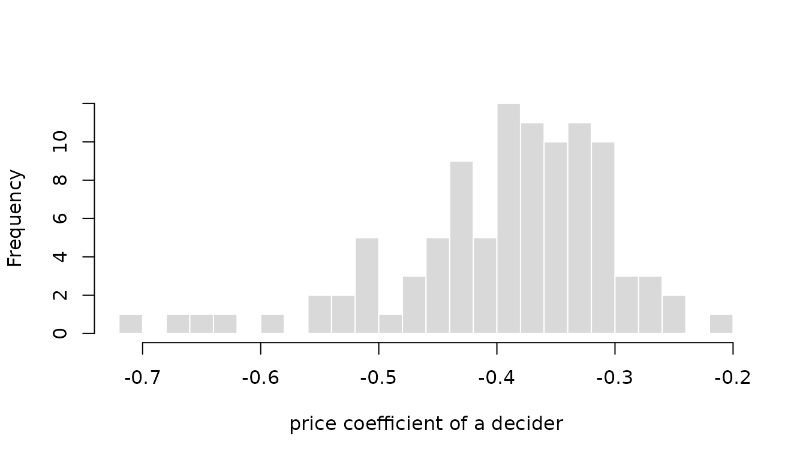

The probit model assigns alternative
at occasion
of decider
the latent utility
with the coefficient vector
.
A model with fixed coefficients sets
for all deciders and thereby assumes that all deciders weigh price,
time, and comfort in the same way. This is rarely true: some travelers
react mainly to the fare, others to travel time, and some households
would pay a premium for a local electricity supplier while others would
not. RprobitB lets coefficients differ between deciders
in two ways, which can be combined: random coefficients follow a
continuous distribution over the population, and latent classes divide
the deciders into groups. Both are requested through arguments of
fit(). Oelschläger (2026) treats the methodological
background. Each variant is first estimated on simulated data, where the
estimates can be compared with the parameters that generated them, and
then applied to data of the mlogit package (Croissant
2020).
Random coefficients
Each term named in random_effects receives a separate
coefficient for every decider, drawn from a population distribution
whose parameters the sampler estimates together with the other
parameters. Such hierarchical models capture continuous preference
heterogeneity and allow inference about the coefficients of individual
deciders (Allenby and
Rossi 1998). The population distribution is normal on a
latent scale: the random coefficients of decider
are
with the mean vector
and the covariance matrix
,
reported as mu[<effect>] and
Omega[<effect>,<effect>]. The mixing
distribution of an effect decides how its latent normal variable enters
the utility. An unnamed vector requests correlated normal effects. A
named vector selects the mixing distribution of each term as
"<covariate>" = "<distribution>", where
"ASC" names the alternative-specific constants:
| Value | Distribution | Coefficient |
|---|---|---|
"cn" |
correlated normal | any sign |
"n" |
uncorrelated normal | any sign |
"cln" |
correlated log-normal | positive |
"ln" |
uncorrelated log-normal | positive |
"cln-" |
correlated log-normal | negative |
"ln-" |
uncorrelated log-normal | negative |
The six values combine two choices. The first is the shape of the
distribution. A normal coefficient can take any value, which suits an
attribute that some deciders like and others dislike. A log-normal
coefficient is the exponential of a normal variable and therefore always
positive, or, with the trailing minus, always negative. It suits an
attribute whose sign is fixed by theory: a higher price does not raise
the utility of any decider. Log-normal effects are estimated on the
latent normal scale, so mu, Omega, and the
individual draws refer to the normal variable whose exponential enters
the utility. The second choice is whether an effect is correlated with
the other correlated effects. Deciders who value travel time may also
value comfort, and the c prefix adds the covariance between
such effects to the model. An uncorrelated effect has its own variance
but no covariance with any other effect, which appears as zeros in
Omega.
The following demonstration combines both choices. The price coefficient is negative log-normal and uncorrelated. Travel time and comfort receive correlated normal effects with a positive covariance.
mixing <- fit(
choice ~ price + time + comfort | 0,
random_effects = c(price = "ln-", time = "cn", comfort = "cn"),
n_deciders = 100,
n_occasions = 10,
dgp_parameters = list(
beta = c(price = -1, time = -0.8, comfort = 0.5),
Omega = rbind(c(0.25, 0, 0), c(0, 0.4, 0.2), c(0, 0.2, 0.3))
),
iterations = 4000,
warmup = 2000,
thin = 2,
chains = 1,
save_individual_draws = TRUE
)
summary(mixing)
#> Bayesian probit choice model
#> Formula: choice ~ price + time + comfort | 0 | 0
#> Samples: 1000 retained per chain, 1 chain
#> variable dgp mean mode sd rhat ess_bulk
#> mu[price] -1.00 -0.956 -0.946 0.1284 1.02 36.0
#> mu[time] -0.80 -0.921 -0.897 0.1045 1.02 66.2
#> mu[comfort] 0.50 0.563 0.561 0.0872 1.01 93.1
#> Omega[price,price] 0.25 0.286 0.227 0.1082 1.04 31.4
#> Omega[time,time] 0.40 0.580 0.547 0.1469 1.05 23.3
#> Omega[time,comfort] 0.20 0.281 0.251 0.0971 1.00 70.0
#> Omega[comfort,comfort] 0.30 0.374 0.381 0.1000 1.02 27.8The dgp column lists the parameters that generated the
data. For the price coefficient, mu[price] is the mean of
the latent normal variable, so the coefficient that enters the utility
is minus its exponential and negative for every decider.
time and comfort share the estimated
covariance Omega[time,comfort], while price
has no covariance entry with either of them.
interpret() converts the coefficients into trade-offs.
For a random effect it uses the coefficient of the median decider, which
for the log-normal price is minus the exponential of
mu[price]:
interpret(mixing, reference = "price")
#> 1 `time` compensates -2.41 `price` (95% interval -3.38 to -1.75)
#> 1 `comfort` compensates 1.47 `price` (95% interval 0.985 to 2.13)The dgp_parameters set the latent mean of the price
effect to -1, so the true median price coefficient is
-exp(-1), about -0.37. Dividing the true time
and comfort coefficients by it gives the true trade-offs, with which the
posterior means above can be compared.
The panel structure makes individual coefficients estimable.
coef(level = "individual") returns the posterior mean
coefficient of every decider, on the latent normal scale for log-normal
effects. The histogram shows the price coefficient of each of the 100
deciders, all negative as the log-normal specification enforces, with
the left tail containing the deciders who react most strongly to a
higher price.
individual <- coef(mixing, level = "individual")
head(individual)
#> price time comfort
#> 1 -0.9435903 -0.7202750 0.8751589
#> 2 -1.1755543 -1.2226296 -0.4385831
#> 3 -0.8668353 -0.2364210 0.8752388
#> 4 -0.7618339 -0.3089142 1.1401193
#> 5 -0.6839710 0.1314405 1.1817297
#> 6 -1.0070474 -1.9981351 -0.4826107
price <- -exp(individual[, "price"])
hist(
price,
breaks = 30, col = "grey85", border = "white",
main = "", xlab = "price coefficient of a decider"
)
Willingness to pay for electricity supplier attributes
The Electricity data of the mlogit
package come from a stated choice experiment in which 361 US households
chose 8 to 12 times among four hypothetical suppliers. The suppliers
differ in price (pf), contract length (cl),
whether the supplier is local (loc) or well-known
(wk), and whether it offers time-of-day (tod)
or seasonal (seas) rates (Huber and Train 2001). The attribute
columns end in the supplier number without a delimiter, pf1
to pf4, so an underscore is inserted first, and the choice
occasions of a household are numbered in the order of the rows.
Contract length and locality receive correlated normal random
coefficients, the other attributes one coefficient for all households.
Fixing the price coefficient to -1 identifies the scale and
expresses every other coefficient in cents per kWh, that is, directly as
a willingness to pay. The fit uses the first 100 households to keep the
computation short.
data("Electricity", package = "mlogit")
names(Electricity) <- sub("([a-z]+)([1-4])$", "\\1_\\2", names(Electricity))
Electricity$occasion <- ave(Electricity$id, Electricity$id, FUN = seq_along)
households <- Electricity[Electricity$id %in% unique(Electricity$id)[1:100], ]
electricity <- fit(
choice ~ pf + cl + loc + wk + tod + seas | 0,
data = households,
random_effects = c("cl", "loc"),
column_decider = "id",
column_occasion = "occasion",
scale = c(pf = -1),
iterations = 4000,
warmup = 2000,
thin = 2,
chains = 1,
save_individual_draws = TRUE,
progress = FALSE
)
summary(electricity)
#> Bayesian probit choice model
#> Formula: choice ~ pf + cl + loc + wk + tod + seas | 0 | 0
#> Samples: 1000 retained per chain, 1 chain
#> variable mean mode sd rhat ess_bulk
#> beta[wk] 1.6306 1.5847 0.1410 1.00 212.8
#> beta[tod] -9.0121 -8.9962 0.1526 1.00 159.6
#> beta[seas] -9.2753 -9.2944 0.1463 1.00 180.1
#> mu[cl] -0.2786 -0.2882 0.0611 1.00 617.0
#> mu[loc] 2.0094 2.0103 0.2363 1.00 366.5
#> Omega[cl,cl] 0.2985 0.2655 0.0680 1.00 243.6
#> Omega[cl,loc] 0.0953 0.0928 0.1132 1.01 156.7
#> Omega[loc,loc] 2.2210 2.0532 0.6127 1.00 243.6
#> Sigma[2,2] 7.4827 7.3177 1.3946 1.00 37.3
#> Sigma[2,3] 1.9747 1.9199 0.8930 1.04 23.7
#> Sigma[3,3] 5.3786 5.4693 1.0108 1.01 148.0
#> Sigma[2,4] 4.1191 3.7725 1.0238 1.01 36.4
#> Sigma[3,4] 1.8906 1.5521 0.8026 1.05 26.8
#> Sigma[4,4] 6.6113 5.9781 1.4583 1.01 47.9Because the price coefficient is fixed, interpret()
reports the coefficients directly as willingness to pay in cents per
kWh, with credible intervals:
interpret(electricity, effects = c("cl", "loc", "wk"))
#> 1 `cl` compensates -0.279 `pf` (95% interval -0.4 to -0.156)
#> 1 `loc` compensates 2.01 `pf` (95% interval 1.56 to 2.5)
#> 1 `wk` compensates 1.63 `pf` (95% interval 1.39 to 1.92)On average, households would accept a price about 2 cents per kWh higher for a local supplier, and would need a price about 0.28 cents lower for each additional year of contract length.
Latent classes
A single normal distribution is a strong assumption about the
distribution of preferences in a population. There may be commuters and
leisure travelers, or households that focus on price and households that
focus on service. latent_class_effects names the effects
that differ between classes latent classes. Every decider
belongs to exactly one class. The class weights
are the probabilities of membership and sum to one, and the class
allocation of every decider is a latent variable that the sampler draws
together with the parameters. Naming a random effect in
latent_class_effects replaces its normal distribution by a
finite mixture of normals, which yields the latent-class mixed
multinomial probit model of Oelschläger and Bauer
(2021). Random effects that
are not named keep one distribution for all deciders, and a named
coefficient that is not random takes one value per class and does not
vary within it, as in the classical latent class model (Kamakura and Russell
1989; Greene and Hensher 2003).
class_update selects how the number of classes is
treated:
-
class_update = "fixed"when exactly substantively meaningful classes are assumed; -
class_update = "sparse"whenclassesis a generous upper bound and redundant classes should empty; -
class_update = "dirichlet_process"for a Dirichlet-process mixture whose number of occupied classes is itself random; -
class_update = "weight_based"for the split, remove, and merge heuristic.
All four updates are demonstrated on one simulated data set with two
classes. The fixed-class fit simulates the data; the other three are
refits through update(), which reuses the simulated
data.
A fixed number of classes
For class_update = "fixed", classes = K
fixes the number of classes. The class weights have the prior
,
where the default class_concentration = 1 is uniform on the
weight simplex. The class labels are arbitrary: swapping them leaves the
likelihood unchanged, so the sampler may swap them during a run.
RprobitB therefore relabels the retained draws after
sampling, so that every draw uses the same labels (Dahl 2006; Papastamoulis and Iliopoulos
2010), and numbers the classes by decreasing weight.
The following demonstration uses eight occasions per decider and two
well-separated classes: a majority with coefficients centered at
-1 and a minority centered at 2.
mixture <- fit(
choice ~ x | 0,
random_effects = "x",
latent_class_effects = "x",
classes = 2,
n_deciders = 100,
n_occasions = 8,
save_individual_draws = TRUE,
dgp_parameters = list(
beta = list(c(x = -1), c(x = 2)),
Omega = list(matrix(0.2), matrix(0.2)),
weights = c(0.6, 0.4)
),
iterations = 1500,
chains = 2,
progress = FALSE
)
summary(mixture, variables = c(
"weight[1]", "weight[2]", "mu[x,1]", "mu[x,2]",
"Omega[x,x,1]", "Omega[x,x,2]"
))
#> Bayesian probit choice model
#> Formula: choice ~ x | 0 | 0
#> Samples: 750 retained per chain, 2 chains
#>
#> variable dgp mean mode sd rhat ess_bulk
#> weight[1] 0.6 0.641 0.647 0.0693 1.08 17.8
#> weight[2] 0.4 0.359 0.353 0.0693 1.08 17.8
#> mu[x,1] -1.0 -0.803 -0.791 0.1256 1.07 23.7
#> mu[x,2] 2.0 2.519 2.487 0.4875 1.15 10.1
#> Omega[x,x,1] 0.2 0.413 0.290 0.2179 1.06 27.5
#> Omega[x,x,2] 0.2 0.726 0.293 0.6509 1.05 23.0latent_class_diagnostics() returns the posterior
distribution of the number of occupied classes, the membership
probabilities of the deciders after relabeling, and the co-clustering
matrix. Its entries are the posterior probabilities that two deciders
belong to the same class:
class_diagnostics <- latent_class_diagnostics(mixture)
class_diagnostics$occupancy
#> n_classes probability
#> 1 2 1
class_diagnostics$membership[1:6, ]
#> class_1 class_2
#> 1 0.9906667 0.009333333
#> 2 0.9953333 0.004666667
#> 3 0.9873333 0.012666667
#> 4 0.3660000 0.634000000
#> 5 0.9906667 0.009333333
#> 6 0.9526667 0.047333333
class_diagnostics$co_clustering[1:6, 1:6]
#> 1 2 3 4 5 6
#> 1 1.0000000 0.9886667 0.9793333 0.3753333 0.9840000 0.9526667
#> 2 0.9886667 1.0000000 0.9826667 0.3706667 0.9873333 0.9506667
#> 3 0.9793333 0.9826667 1.0000000 0.3786667 0.9793333 0.9466667
#> 4 0.3753333 0.3706667 0.3786667 1.0000000 0.3753333 0.4013333
#> 5 0.9840000 0.9873333 0.9793333 0.3753333 1.0000000 0.9513333
#> 6 0.9526667 0.9506667 0.9466667 0.4013333 0.9513333 1.0000000Class-specific coefficients
Do the train travelers of the vignette Get
started with RprobitB all trade time against money at the same rate,
or are there classes with different values of time? The fit below uses
the first 60 travelers, fixes the price coefficient to -1,
and gives the time coefficient two class-specific values through
latent_class_effects without a random effect, so each class
has its own value of travel time and the remaining coefficients are
common to both classes.
data("Train", package = "mlogit")
Train$price_A <- Train$price_A / 100 / 2.20371
Train$price_B <- Train$price_B / 100 / 2.20371
Train$time_A <- Train$time_A / 60
Train$time_B <- Train$time_B / 60
train_small <- Train[Train$id %in% unique(Train$id)[1:60], ]
train_classes <- fit(
choice ~ price + time + change + factor(comfort) | 0,
data = train_small,
latent_class_effects = "time",
classes = 2,
column_decider = "id",
column_occasion = "choiceid",
scale = c(price = -1),
iterations = 1500,
chains = 2,
progress = FALSE
)
summary(train_classes, variables = c(
"weight[1]", "weight[2]", "beta[time,1]", "beta[time,2]"
))
#> Bayesian probit choice model
#> Formula: choice ~ price + time + change + factor(comfort) | 0 | 0
#> Samples: 750 retained per chain, 2 chains
#>
#> variable mean mode sd rhat ess_bulk
#> weight[1] 0.754 0.806 0.0763 1.00 129.5
#> weight[2] 0.246 0.194 0.0763 1.00 129.5
#> beta[time,1] -2.586 -2.495 0.9012 1.01 170.6
#> beta[time,2] -18.484 -17.812 3.0460 1.01 94.3With the price coefficient fixed at -1, the
class-specific time coefficients are values of travel time in euro per
hour, which interpret() reports class by class:
time_by_class <- interpret(train_classes, effects = "time")
time_by_class
#> Class 1: 1 `time` compensates -2.59 `price` (95% interval -4.21 to -0.618)
#> Class 2: 1 `time` compensates -18.5 `price` (95% interval -25.1 to -13.2)The larger class values an hour at about 3 euro, the smaller class at about 18 euro. The smaller class chooses the faster trip almost regardless of its price.
Weight-based class updates
Oelschläger and Bauer (2021) presents a weight-based
update scheme for latent class analysis. Every buffer
warmup iterations, it removes the smallest class if its weight is below
epsmin, splits the largest class if its weight is above
epsmax, or merges the closest pair of classes if the
distance of their means is below deltamin, at most one
operation in this order. weight_based_control overrides the
defaults of these constants, and max_classes bounds the
splitting. These dimension changes correspond to no prior on the number
of classes, and they stop after warmup, so the reported
n_classes is the outcome of a search, not a posterior
distribution.
This refit and the two in the following subsections change the class
update, so summary() has no dgp column for
them. The helper recover_classes() provides the comparison
with the true values instead. The classes are numbered by decreasing
weight, so the first class should be the majority with weight
0.6 and mean -1, and the second class the
minority with weight 0.4 and mean 2. The
helper puts the posterior means of these four variables and the most
probable number of occupied classes beside the true values. Applied to
the fit with two fixed classes, it gives the reference for the
refits:
recover_classes <- function(x) {
variables <- c("weight[1]", "weight[2]", "mu[x,1]", "mu[x,2]")
occupancy <- latent_class_diagnostics(x)$occupancy
data.frame(
variable = c("n_classes", variables),
dgp = c(2, 0.6, 0.4, -1, 2),
estimate = round(c(
occupancy$n_classes[which.max(occupancy$probability)],
coef(x)[variables]
), 2),
row.names = NULL
)
}
recover_classes(mixture)
#> variable dgp estimate
#> 1 n_classes 2.0 2.00
#> 2 weight[1] 0.6 0.64
#> 3 weight[2] 0.4 0.36
#> 4 mu[x,1] -1.0 -0.80
#> 5 mu[x,2] 2.0 2.52The weight-based refit is compared in the same way:
weight_based <- update(mixture, class_update = "weight_based")
recover_classes(weight_based)
#> variable dgp estimate
#> 1 n_classes 2.0 2.00
#> 2 weight[1] 0.6 0.64
#> 3 weight[2] 0.4 0.36
#> 4 mu[x,1] -1.0 -0.79
#> 5 mu[x,2] 2.0 2.48The run ends with the two classes that generated the data, and their weights and means agree closely with those of the fixed fit.
Sparse finite mixtures
A sparse finite mixture fixes a generous upper bound
,
permits empty classes, and places the symmetric Dirichlet prior with a
small concentration
on the weights, which favors emptying redundant classes (Rousseau and Mengersen
2011; Frühwirth-Schnatter and
Malsiner-Walli 2019). The default
class_concentration = c(shape = 1, rate = 200) is the gamma
hyperprior
with mean 0.005. Under a fixed
,
the prior expected number of occupied classes among
deciders is
which translates into a statement about the number of classes. At the prior mean , with and the 100 deciders of the simulated data, the prior expects close to a single occupied class. The refit sets the upper bound to six classes for the two-class data.
sparse <- update(mixture, classes = 6, class_update = "sparse")
summary(sparse)
#> Bayesian probit choice model
#> Formula: choice ~ x | 0 | 0
#> Samples: 750 retained per chain, 2 chains
#>
#> variable occupied mean mode sd rhat ess_bulk
#> weight[1] 1.0000 0.64637 0.65677 0.06345 1.05 37.00
#> weight[2] 1.0000 0.33745 0.33586 0.07115 1.14 9.74
#> weight[3] 0.1367 0.08081 0.06237 0.04334 NA NA
#> weight[4] 0.0600 0.06883 0.01925 0.05491 NA NA
#> weight[5] 0.0187 0.03007 0.00759 0.03366 NA NA
#> weight[6] 0.0060 0.01393 0.00856 0.00985 NA NA
#> mu[x,1] 1.0000 -0.79424 -0.76833 0.14345 1.04 47.75
#> mu[x,2] 1.0000 2.55763 2.53497 0.46789 1.10 20.68
#> mu[x,3] 0.1367 4.17424 4.85457 1.70340 NA NA
#> mu[x,4] 0.0600 1.45445 2.38645 2.36518 NA NA
#> mu[x,5] 0.0187 -0.30763 -0.87646 1.37171 NA NA
#> mu[x,6] 0.0060 1.16673 2.45931 1.72811 NA NA
#> Omega[x,x,1] 1.0000 0.42857 0.28549 0.24736 1.29 5.90
#> Omega[x,x,2] 1.0000 0.71246 0.22555 0.79244 1.19 7.89
#> Omega[x,x,3] 0.1367 0.55243 0.22765 0.68782 NA NA
#> Omega[x,x,4] 0.0600 3.16163 0.84625 3.87558 NA NA
#> Omega[x,x,5] 0.0187 0.51513 0.31387 0.42605 NA NA
#> Omega[x,x,6] 0.0060 1.24725 0.28830 2.37884 NA NA
#> class_concentration 1.0000 0.00925 0.00465 0.00638 1.16 9.28
#> n_classes 1.0000 2.22133 2.00000 0.43872 1.19 7.63
latent_class_diagnostics(sparse)$occupancy
#> n_classes probability
#> 1 2 0.7886667
#> 2 3 0.2013333
#> 3 4 0.0100000
recover_classes(sparse)
#> variable dgp estimate
#> 1 n_classes 2.0 2.00
#> 2 weight[1] 0.6 0.65
#> 3 weight[2] 0.4 0.34
#> 4 mu[x,1] -1.0 -0.79
#> 5 mu[x,2] 2.0 2.56Although the prior favors a single class, the posterior concentrates
on two occupied classes, whose weights and means are close to the true
values. When the number of classes varies, a class exists only in part
of the draws, and the occupied column of
summary() reports this share.
Dirichlet-process mixtures
For class_update = "dirichlet_process", the precision
controls the prior tendency to open new classes, with the default
of mean 0.5. Conditional on a fixed
,
the prior expects
occupied classes among
deciders, which for
and 100 deciders is about three. RprobitB updates
with the augmentation of Escobar and West (1995) and the allocations with the
algorithm of Neal (2000). max_classes caps the
number of classes the sampler may open, and fit() warns
when the draws reach the cap.
dynamic <- update(
mixture, class_update = "dirichlet_process", max_classes = 15,
iterations = 1000
)
summary(dynamic)
#> Bayesian probit choice model
#> Formula: choice ~ x | 0 | 0
#> Samples: 500 retained per chain, 2 chains
#>
#> variable occupied mean mode sd rhat ess_bulk
#> weight[1] 1.000 0.5471 0.5920 0.10106 1.03 41.98
#> weight[2] 1.000 0.3151 0.3621 0.07610 1.18 8.91
#> weight[3] 0.855 0.0833 0.0268 0.06907 NA NA
#> weight[4] 0.640 0.0699 0.0176 0.07218 NA NA
#> weight[5] 0.390 0.0382 0.0122 0.04351 NA NA
#> weight[6] 0.188 0.0211 0.0100 0.01987 NA NA
#> weight[7] 0.090 0.0199 0.0100 0.01738 NA NA
#> weight[8] 0.040 0.0230 0.0100 0.02794 NA NA
#> weight[9] 0.013 0.0108 0.0100 0.00277 NA NA
#> mu[x,1] 1.000 -0.8396 -0.8130 0.18783 1.04 45.13
#> mu[x,2] 1.000 2.5598 2.3691 0.51370 1.16 9.46
#> mu[x,3] 0.855 0.1459 -0.6121 2.08977 NA NA
#> mu[x,4] 0.640 0.1443 -0.7056 2.39762 NA NA
#> mu[x,5] 0.390 0.0694 -0.1256 2.56027 NA NA
#> mu[x,6] 0.188 0.1430 -0.9381 2.66888 NA NA
#> mu[x,7] 0.090 0.3203 -1.3491 2.59811 NA NA
#> mu[x,8] 0.040 0.2613 0.0804 2.72571 NA NA
#> mu[x,9] 0.013 -0.0167 0.2536 3.16027 NA NA
#> Omega[x,x,1] 1.000 0.3462 0.2340 0.22123 1.07 29.86
#> Omega[x,x,2] 1.000 1.0125 0.3474 0.94014 1.33 5.06
#> Omega[x,x,3] 0.855 1.1329 0.2802 2.19931 NA NA
#> Omega[x,x,4] 0.640 0.8212 0.2669 1.54828 NA NA
#> Omega[x,x,5] 0.390 0.9336 0.2996 1.80702 NA NA
#> Omega[x,x,6] 0.188 0.9343 0.2606 2.58135 NA NA
#> Omega[x,x,7] 0.090 1.1247 0.3334 1.52734 NA NA
#> Omega[x,x,8] 0.040 1.1982 0.3145 2.01666 NA NA
#> Omega[x,x,9] 0.013 1.2657 0.2395 3.22315 NA NA
#> class_concentration 1.000 0.6189 0.4451 0.34134 1.02 143.88
#> n_classes 1.000 4.2160 4.0000 1.59747 1.06 29.25
latent_class_diagnostics(dynamic)$occupancy
#> n_classes probability
#> 1 2 0.145
#> 2 3 0.215
#> 3 4 0.250
#> 4 5 0.202
#> 5 6 0.098
#> 6 7 0.050
#> 7 8 0.027
#> 8 9 0.013
recover_classes(dynamic)
#> variable dgp estimate
#> 1 n_classes 2.0 4.00
#> 2 weight[1] 0.6 0.55
#> 3 weight[2] 0.4 0.32
#> 4 mu[x,1] -1.0 -0.84
#> 5 mu[x,2] 2.0 2.56The occupancy distribution is wider than under the sparse finite prior and assigns most of its probability to three or more classes. This reflects the prior, which expects about three occupied classes for 100 deciders. The two largest classes nevertheless match the two true groups, because the superfluous classes contain only a few deciders.
Ordered and ranked responses
Both mechanisms also work for ordered and ranked responses, which the
vignette Model
specification and variants introduces. The following demonstration
uses a simulated panel of rankings: 100 deciders order three
alternatives five times each, with a coefficient that varies normally
around -1.
ranked_random <- fit(
rank ~ x | 0,
choice_type = "ranked",
random_effects = "x",
n_deciders = 100,
n_occasions = 5,
n_alternatives = 3,
dgp_parameters = list(beta = c(x = -1), Omega = matrix(0.3)),
iterations = 2000,
chains = 1,
progress = FALSE
)
summary(ranked_random)
#> Bayesian probit choice model
#> Formula: rank ~ x | 0 | 0
#> Samples: 1000 retained per chain, 1 chain
#> variable dgp mean mode sd rhat ess_bulk
#> mu[x] -1.000 -0.895 -0.882 0.0689 1.00 142.0
#> Omega[x,x] 0.300 0.255 0.251 0.0651 1.01 54.5
#> Sigma[B,C] 0.297 0.301 0.298 0.0585 1.01 61.8
#> Sigma[C,C] 0.320 0.381 0.376 0.0746 1.01 79.1The summary shows the population mean and variance beside their true
values. Ordered responses accept the same arguments, and latent classes
are requested in the same way as above, with
latent_class_effects and classes.
Further reading
The vignette Posterior prediction uses the individual coefficients to compute choice probabilities for each decider in the fit. The vignette Bayesian model evaluation shows how to decide whether random coefficients improve a model.